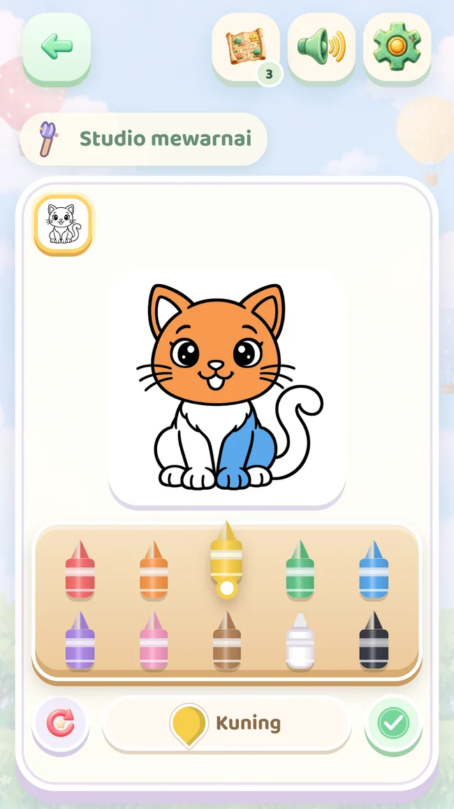
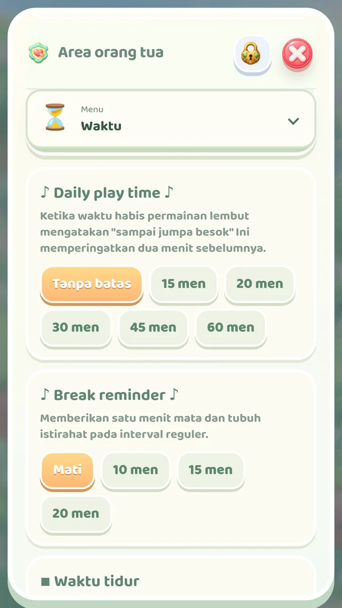

Tampilan asli permainan
Lihat, cocokkan, coba.
Permainan kecil dengan bentuk yang dikenal.
Petualangan kecil untuk usia 2–5 tahun
Ikuti anak kucing menuju bentuk, warna, dan cerita kecil. Biarkan si kecil menyentuh, mencoba, dan berkreasi bersama Anda.
Saat ini dalam pengujian tertutup. Akses Google Play bergantung pada izin akun pengujian Anda.



Rasa ingin tahu di setiap tempat
Aktivitas singkat hadir dalam satu perjalanan. Mencocokkan, menelusuri garis, mengingat, berhitung, dan berkreasi bergantian dengan tantangan yang meningkat perlahan.
Tampilan asli permainan
Permainan kecil dengan bentuk yang dikenal.
Tampilan asli permainan
Si kecil memilih warna untuk gambarnya.
Adegan dari versi lengkap
Buat adegan dengan stiker yang diraih.
Tampilan asli permainan
Tangan kecil menyatukan gambar.

Bersama, sesuai ritme keluarga
Pemeriksaan orang dewasa melindungi area orang tua. Atur waktu bermain, lihat yang sudah dicoba, dan temukan ide kegiatan bersama.
Durasi bermain harian, pengingat jeda, dan waktu tidur.
Aktivitas selesai dan durasi bermain. Bukan tes perkembangan atau kemampuan.
Simpan atau bagikan karya dan siapkan lembar A4 untuk dicetak serta diwarnai.
Gambar yang dikenal, kata baru
Pilih gambar, dengarkan namanya, lalu cari benda yang sama di rumah. Kelima bahasa tersedia di kedua versi.
Suara bahasa Turki dan Inggris disertakan dan berfungsi tanpa internet. Bahasa Spanyol, Portugis Brasil, dan Indonesia memakai suara perangkat; ketersediaan serta penggunaan luring bergantung pada paket yang terpasang.
Tempat gratis dapat dimainkan ulang. Gambar dan medali yang diraih tetap tersimpan. Koleksi lengkap dibuka melalui pembelian opsional satu kali di area orang tua.
Buka area orang tua di dalam permainan, lalu Versi lengkap. Google Play menampilkan harga dan meminta konfirmasi pembayaran. Situs ini tidak menerima pembayaran. Tanpa langganan.
Pembelian memberi akses ke koleksi lengkap. Tempat tetap dibuka berurutan setelah diselesaikan; pembelian tidak melewati progres.
Konten aplikasi Android dapat dimainkan tanpa internet. Pembelian dan pemulihan memerlukan internet. Suara luring tiga bahasa lainnya bergantung pada paket suara perangkat.
Pulihkan pembelian dari area orang tua dengan akun Google Play yang sama. Progres dan karya tersimpan di perangkat; pemulihan pembelian tidak otomatis memindahkannya.
Tidak. Bintang adalah hadiah permainan. Ringkasan menunjukkan aktivitas selesai dan durasi bermain; bukan penilaian perkembangan atau kemampuan anak.
Ikuti anak kucing menuju bentuk, warna, dan cerita kecil. Biarkan si kecil menyentuh, mencoba, dan berkreasi bersama Anda.
Saat ini dalam pengujian tertutup. Akses Google Play bergantung pada izin akun pengujian Anda.